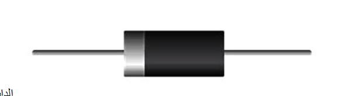

الدايود:
Diode (الوصلة الثنائية)
وهو عبارة عن بلورات من السيليكون المضاف لها بعض الشوائب، فمنها البلورات السالبة ويرمز لها بالرمز N والبلورات الموجبة ويرمز لها بالرمز P. ويتكون الدايود من بلورتين واحدة سالبة وأخرى موجبة.
بحيث يسمح بمرور التيار الكهربائي في اتجاه واحد فقط ولمزيد من الشرح للدايود Diode واستخدامه في الدائرة الالكترونية
